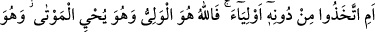
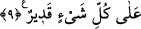

9. Yoksa onlar Allah’tan başka dostlar mı edindiler? Halbuki dost yalnız Allah’tır.
O ölüleri diriltir, her şeye kadirdir.
“Yoksa onlar Allah’tan başka” putlardan ve başka şeylerden “dostlar mı edindiler?”
“Halbuki” gerçek dost istiyorlarsa “dost yalnız Allah’tır. O ölüleri diriltir.” Ölüleri
diriltmek onun şânındandır. Göklerde ve yerde O’ndan başka ölüleri diriltecek bir
mabud yoktur. “O her şeye kadirdir.” Dost edinmeye lâyık olan O’dur. Öyle ise hiçbir
şeye kadir olmayan putları değil yanlız O’nu dost edinsinler.
Buradaki “em” kelimesi munkatıa olup “bel” takdiri iledir. Hemze ve muhtevâsında
olan bel önceki hükmün beyanından sonraki hükmün beyanına intikal içindir. Buradaki
istifham hemzesi böyle bir şeyin vukuunu inkâr ve böyle bir şeyin oluşumunu en beliğ ve
en kuvvetli bir şekilde ortadan kaldırmak içindir. Yoksa olan bir şeyi reddetmek ve
onun çirkinliğini izah etmek için değildir. Burada asıl murad edilen şey şudur: Bu
müşriklerin yaptıkları, “dost edinme konusunda” boş, değersiz ve hükümsüzdür. Çünkü
bu durum putları dost edinmenin bir sonucu olup bunun olamayacağı ise âşikâr ve
besbellidir. Buna göre mânâ şudur: “Yoksa onlar Allah’ı bir tarafa bırakarak putları ve
daha başka şeyleri mi dost edindiler.”
Şâirin serzenişiyle:
“Heyhât! Dost sözünü onlar (için) kullanır.”
“Dost yalnız Allah’tır.” Bu ifâde mahzüf bir şartın cevabı niteliğindedir. Sanki
onların dost edindiklerinin dostluğu iptal edildikten sonra şöyle deniyor: Şâyet gerçek
dost istiyorlarsa işte dost yalnız Allah’tır. O dost edinilir. Mevla, sahip ve efendi odur.
Ondan başka dost yoktur. Hayır-şer, fayda-zarar bütün işlerin sahibi odur.
Keşfü’l-esrar’ da şöyle denmiştir: “Allah yardım edenlerin sevgilisidir.”
Müfti Sa’dî şöyle der. “Fallahu” kelimesinin başındaki “fa” harfi, sebeb üzerine
dâhil olan “fâ-i sebebiye” olabilir. Çünkü burada “fâ”nın zikri, sebebin zikrinin
sonucudur. Sonuç olarak dostluğun yalnız Allah’a tahsis edilmesi, Allah’tan başkasını
dost edinmeyi bırakmanın bir sebebidir. Bu durum, “Zeyd senin kardeşindir. Sen ona
vurur musun?” sözü gibidir. Ki bu, “Zeyd senin kardeşin olduğu için ona vurman sana
yakışmaz” demektir.
“O ölüleri diriltir” sözü, İbrahim (a.s.)’ın Nemrud’a karşı söylediği “Benim Rabbim
odur ki yaşatır öldürür” (el-Bakara 2/258) sözü gibidir.
Yunus (a.s.)’ın kavmine azab ineceği zaman aralarında bulunan bir zâta sığındılar.
Yunus (a.s.) söz dinlemedikleri için kavmine öfkelenmiş ve onları terkedip gitmişti. Bu
âlim zât onlara: “Hiçbir canlının olmadığı anda hayy olan Rabbimiz! Ey ölüleri dirilten